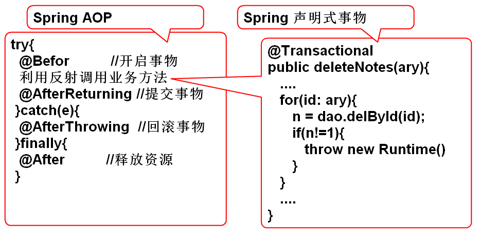
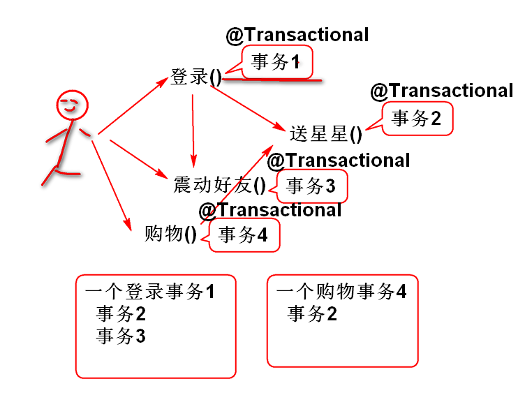
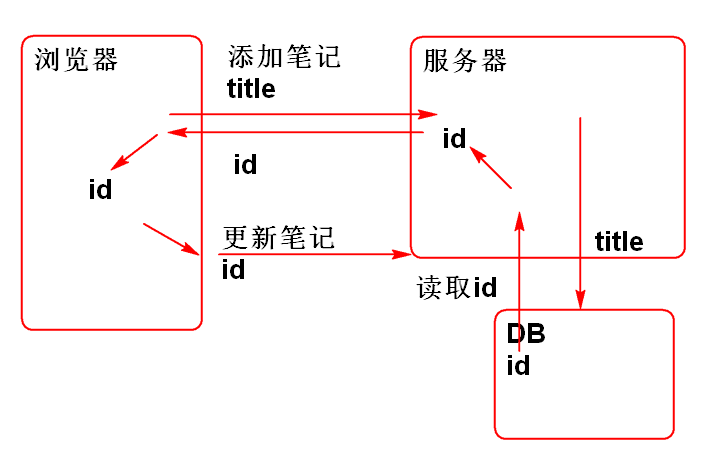
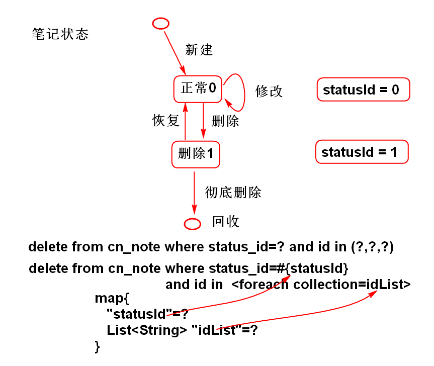
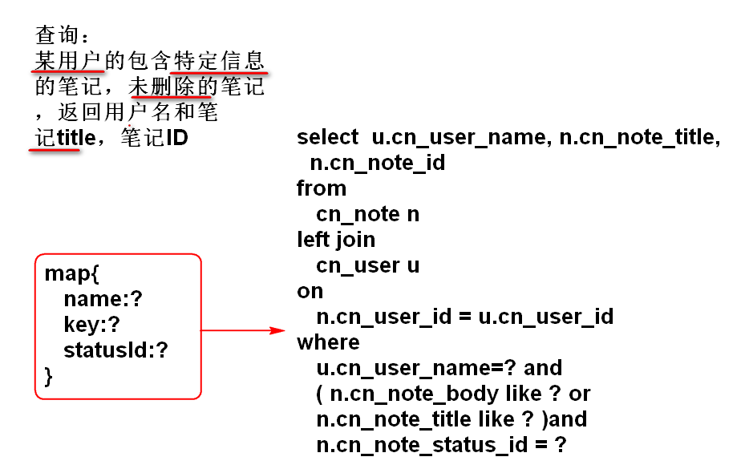

横截面拦截编程
@通知(切入点表达式)
@Around("bean(userService)")
切入点表达式
类级别
within(cn.tedu.note.service.impl.UserServiceImpl)
within(cn.tedu.note.service.impl.*Impl)
bean对象级别
bean(userService)
bean(userService) || bean(noteService)
bean(*Service)
方法级别
execution(* cn.tedu.note.service.UserService.login(..))
execution(* cn.tedu.note.service.UserService.*(..))
execution(* cn.tedu.note.service.*Service.*(..))
execution(* cn.tedu.*.service.*Service.*(..))
建议: 在软件中将包名，类名，方法名定义的有规律，便于使用“切入点”表达的书写。
AOP底层利用了动态代理技术
建议AOP切入到有接口的位置，自动调用JDK动态代理。
JDK动态代理是反射API的一部分
模式: 解决特定问题的固定编程套路，是无需思考的固定思路。
单例模式：解决“单例问题”的固定编程套路。
单例：在程序运行期间类只能有一个实例。
案例：
public class Demo {
public static void main(String[] args) {
//Girl friend = new Girl();
//Girl friend2 = new Girl();
//Girl g = Girl.girl;
//Girl.girl = null;
Girl g = Girl.getGirl();
Girl g1 = Girl.getGirl();
}
}
//饿汉式（立即式）
class Girl{
//....
private static Girl girl = new Girl();
private Girl() {
//...
}
public static Girl getGirl() {
return girl;
}
}
//懒惰式(懒汉式)
class Boy{
//....
private static Boy boy;
private Boy() {
//...
}
public synchronized static Boy getBoy() {
if(boy==null){
boy = new Boy();
}
return boy;
}
}
单例，单例模式 区别?
JDK使用的模式：
保证一个业务操作的完整完成，避免其他业务过程的干扰。
编程式事物处理：
//建立连接
conn = ...
try{
//开始事物 @Befor
conn.setAutocomit(false);
业务操作 过程
select ...
insert ... //可能发生异常
update ... //钱不够，异常
delete ...
//提交事物
conn.commit(); @AfterReturning
}catch(e){
//回滚事物
conn.rollback(); @AfterThrowing
}finally{
//释放资源
conn.close(); @After
}
Spring 利用AOP，实现了声明式事物管理：
try{ //业务方法
@Befor //开启事物 @Transactional
利用反射调用业务方法 --------> updateNote(){....}
@AfterReturning //提交事物
}catch(e){
@AfterThrowing //回滚事物
}finally{
@After //释放资源
}

案例:
配置事务管理器 spring-mybatis.xml:
<!-- 配置事务管理器：基于dataSource的事务管理器 -->
<bean id="txMgr" class="org.springframework.jdbc.datasource.DataSourceTransactionManager">
<property name="dataSource" ref="dataSource"></property>
</bean>
<!-- 用于驱动 @Transactional 注解 -->
<tx:annotation-driven transaction-manager="txMgr"/>
持久层方法， NoteDao:
int deleteNote(String id);
添加SQL NoteMapper.xml:
<delete id="deleteNote"
parameterType="string">
delete from
cn_note
where
cn_note_id=#{id}
</delete>
业务层方法 NoteService:
int deleteNotes(String... ids);
实现业务层方法
@Transactional
public int deleteNotes(String... ids) {
//String... 就是 String[]
for(String id: ids){
int n = noteDao.deleteNote(id);
if(n!=1){
throw new NoteNotFoundException(id);
}
}
return ids.length;
}
业务层方法中使用 @Transactional 这样方法就自动支持事务了，当方法抛出 RuntimeException（含子类）时候，方法中的操作就会自动回滚。 String... 是编程参数，本质上就是字符串数组 String[]
测试 NoteServiceTestCase：
@Test
public void testDeleteNotes(){
String id1="5565bda4-ddee-4f87-844e-2ba83aa4925f";
String id2="9187ffd3-4c1e-4768-9f2f-c600e835b823";
String id3="fed920a0-573c-46c8-ae4e-368397846efd";
String id4="ebd65da6-3f90-45f9-b045-782928a5e2c0";
// String... 变长参数，编译过后是
// new String[]{id1,id2,id3,id4}
// String... 只能用于最后一个参数
int n = service.deleteNotes(
id1, id2, id3, id4);
System.out.println(n);
}
测试结果：当传入方法的ID包含错误时候，会发生事务回滚，回退到没有删除的状态，如果传入方法的ID都是正确的时候，方法才能正确执行提交事务删除数据。
在全部的业务层方法上使用 @Transactional 使项目支持事务。
只读属性：@Transactional( readOnly=true ) 说明当前事务方法执行期间只进行数据库读取操作，不对数据库进行写操作（insert, update, delete）使用这个属性可以提供只读方法的性能。
事务隔离属性：
绝大多数情况下使用默认的 READ_COMMITTED
事务传播问题：

传播属性:
绝大多数使用： REQUIRED
MySQL SQLServer DB2 等数据库提供了自增类型
Oracle 中没有自增类型类型，Oracle提供了类似的Sequence
MySQL：
create table person
(
person_id int not null auto_increment,
person_name varchar(50),
person_age int,
primary key (person_id)
);
自增类型会自动填写，无需插入值
insert into person (person_id, person_name, person_age)
values(null, 'Tom', 10);
insert into person ( person_name, person_age)
values( 'Tom', 10);
为什么需要读取自增ID的值：

MyBatis 支持了自增类型：
创建数据库表
create table person
(
person_id int not null auto_increment,
person_name varchar(50),
person_age int,
primary key (person_id)
);
创建实体类：
public class Person implements Serializable{
private static final long serialVersionUID = 7033415472221675294L;
private Integer id;
private String name;
private Integer age;
public Person() {
}
public Person(String name, Integer age) {
this.name = name;
this.age = age;
}
public Integer getId() {
return id;
}
public void setId(Integer id) {
this.id = id;
}
public String getName() {
return name;
}
public void setName(String name) {
this.name = name;
}
public Integer getAge() {
return age;
}
public void setAge(Integer age) {
this.age = age;
}
@Override
public String toString() {
return "Person [id=" + id + ", name=" + name + ", age=" + age + "]";
}
@Override
public int hashCode() {
final int prime = 31;
int result = 1;
result = prime * result + ((id == null) ? 0 : id.hashCode());
return result;
}
@Override
public boolean equals(Object obj) {
if (this == obj)
return true;
if (obj == null)
return false;
if (getClass() != obj.getClass())
return false;
Person other = (Person) obj;
if (id == null) {
if (other.id != null)
return false;
} else if (!id.equals(other.id))
return false;
return true;
}
}
创建持久层接口:
public interface PersonDao { int addPerson(Person person); }
声明SQL， PersonMapper.xml:
<mapper namespace="cn.tedu.note.dao.PersonDao">
<!-- useGeneratedKeys 用于支持自增类型，
可以在插入数据以后读取自动增加的ID
keyProperty="id" 用于指定那个Bean属性是
自增类型，Person 类包含属性 ID，属性的值
会自动的填充为数据库生成的新ID-->
<insert id="addPerson"
useGeneratedKeys="true"
parameterType="cn.tedu.note.entity.Person"
keyProperty="id">
insert into person(
person_id,
person_name,
person_age
) values (
null,
#{name},
#{age}
)
</insert>
</mapper>
测试
public class PersonDaoTestCase
extends BaseTestCase{
PersonDao dao;
@Before
public void initDao(){
dao = ctx.getBean(
"personDao",PersonDao.class);
}
@Test
public void testAddPerson(){
Person person =
new Person("李洪鹤", 30);
System.out.println(person);//id=null
//myBatis在添加对象时候，自动的读取自增
//类型的ID值，填充到person的id属性
int n = dao.addPerson(person);//id=3
System.out.println(person);
System.out.println(n);
}
}
MyBatis 的配置文件支持动态SQL
<if> 单路分支<choose> <when> 多路分支<trim> 去掉多余的 ， and or<foreach>如上标签可以与任何的SQL进行拼接
批量删除可以使用foreach
delete from cn_note where cn_note_id=?
delete from cn_note where cn_note_id=?
delete from cn_note where cn_note_id=?
delete from cn_note where cn_note_id=?
替换为：
delete from cn_note where cn_note_id in (?,?,?,?)
利用foreach标签可以生成 如上语句:
声明持久层方法 NoteDao:
int deleteNotes(List<String> list);
声明SQL NoteMapper.xml:
<!-- deleteNotes(List<String> list) -->
<delete id="deleteNotes">
delete from
cn_note
where
cn_note_id
in
<foreach collection="list"
open="(" separator="," close=")"
item="id">
#{id}
</foreach>
</delete>
测试 NoteDaoTestCase
@Test
public void testDeleteNotes(){
List<String> list=
new ArrayList<String>();
list.add("84b2d98b-af39-4655-8aa8-d8869d043cca");
list.add("c347f832-e2b2-4cb7-af6f-6710241bcdf6");
list.add("07305c91-d9fa-420d-af09-c3ff209608ff");
int n = dao.deleteNotes(list);
System.out.println(n);
}
使用Map封装参数：

声明持久层方法 NoteDao:
int deleteNotesByParams( Map<String, Object> param);
添加SQL NoteMapper.xml:
<!-- 多参数删除,
map={statusId=?, idList=list} -->
<delete id="deleteNotesByParams"
parameterType="map">
delete from
cn_note
where
<if test="statusId!=null">
cn_note_status_id=#{statusId} and
</if>
cn_note_id in
<foreach collection="idList"
open="(" separator="," close=")"
item="id">
#{id}
</foreach>
</delete>
测试 NoteDaoTestCase
@Test
public void testDeleteNotesByParams(){
//组织参数
Map<String, Object> map=
new HashMap<String, Object>();
//添加参数statusId
map.put("statusId", "1");
//添加id列表
List<String> list =
new ArrayList<String>();
list.add("fsaf-as-df-asdf-as-df-dsa");
list.add("ss19055-30e8-4cdc-bfac-97c6bad9518f");
map.put("idList", list);
//调用数据层方法
int n=dao.deleteNotesByParams(map);
System.out.println(n);
}
复杂参数查询：

声明持久层方法 NoteDao.java
List<Map<String, Object>>
findNoteByParams(Map<String, Object> param);
声明SQL NoteMapper.xml
<select id="findNoteByParams"
parameterType="map"
resultType="map">
select
u.cn_user_name as name,
n.cn_note_title as title,
n.cn_note_id as noteId
from
cn_note n
left join
cn_user u
on
n.cn_user_id = u.cn_user_id
<where>
<trim suffixOverrides="and">
<if test="name!=null">
u.cn_user_name=#{name} and
</if>
<if test="key!=null">
(n.cn_note_body like '%${key}%' or
n.cn_note_title like '%${key}%' ) and
</if>
<if test="statusId != null">
n.cn_note_status_id = #{statusId}
</if>
</trim>
</where>
</select>
测试 NoteDaoTestCase
@Test
public void testFindNotesByParams(){
Map<String, Object> map =
new HashMap<String, Object>();
map.put("statusId", "1");
map.put("key","a");
map.put("name", "zhoujia");
List<Map<String, Object>> list=
dao.findNoteByParams(map);
for (Map<String, Object> obj : list) {
System.out.println(obj);
}
}